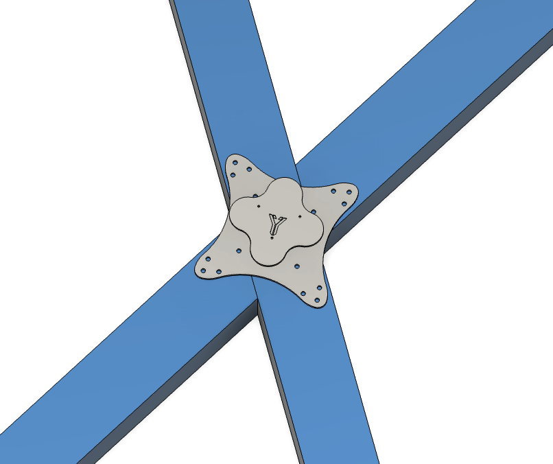
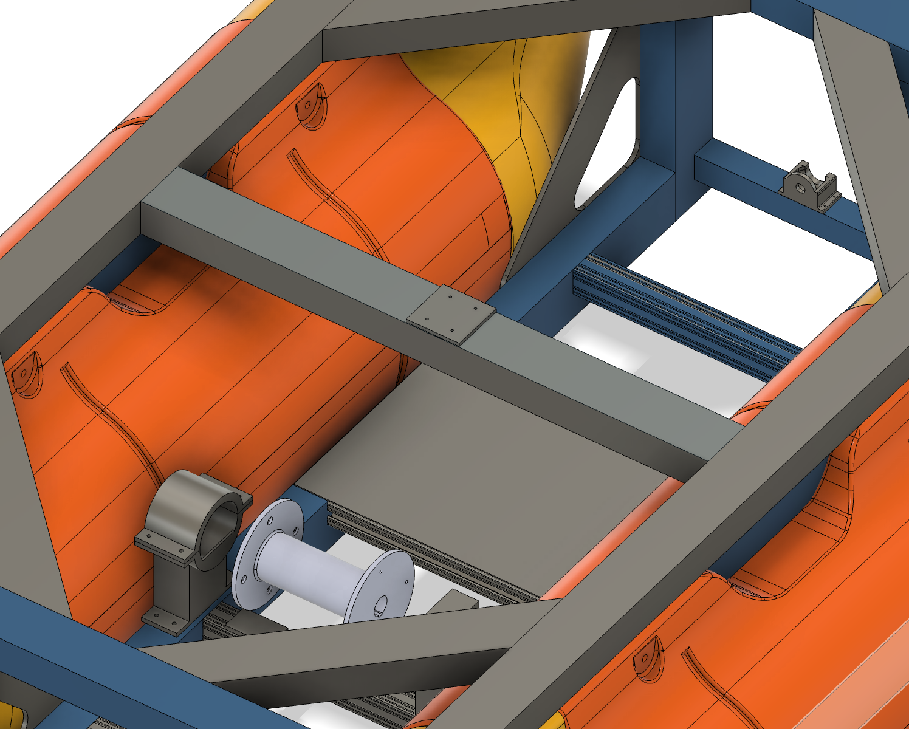

1 · Pontoon frame: co-designed
The frame joins the two pontoons and carries every payload: sensors, electronics and thrusters. I co-designed it with another mechanical team member, through many review rounds with the whole team.
| Material | 6061-T6 aluminum (marine grade) |
| Joining | Welded and bolted |
| Pontoon draft target | ≈ 5 cm |
| Design driver | Modular, for quick field disassembly, cleaning and upgrades |
2 · LiDAR mount: designed
The vessel needed a LiDAR for perception and navigation, and no mount existed. I designed one in Fusion 360 that attaches to the frame, keeps the sensor stable, and gives it a clear field of view in a marine environment.


3 · Pool tests: supported
Before the full vessel was built, the team pool-tested a preliminary rig: a plank carrying the electronics box and foam flotation, with thrusters in an X configuration.
- What we checked: buoyancy, power draw, and whether thruster noise would drown out the hydrophone. It didn't.
- Test 1: one motor failed.
- Test 2: all four thrusters worked, and the rig drove to the end of the pool, turned around and came back.

4 · Trade studies: contributed
- Waterproof electrical enclosure: IP rating, corrosion resistance, size.
- Thruster orientation, LiDAR placement, mass distribution, and recovering from a flip in rough seas.
I also 3D printed functional parts, tuning print orientation and temperature for strength and accuracy.
What I'd change
- Do a hand calculation of buoyancy and draft for the full payload before the frame goes to welding.
- Log thrust and power numbers in the next pool test so the results are numbers, not observations.